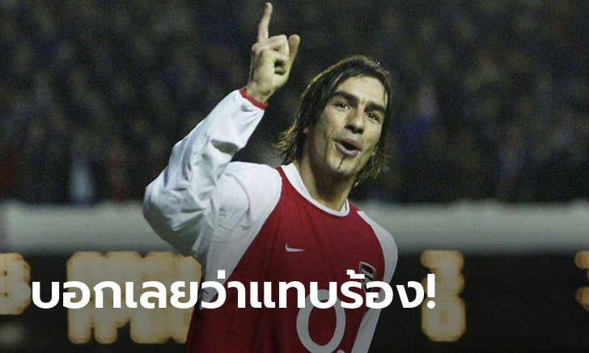
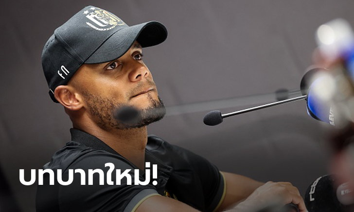
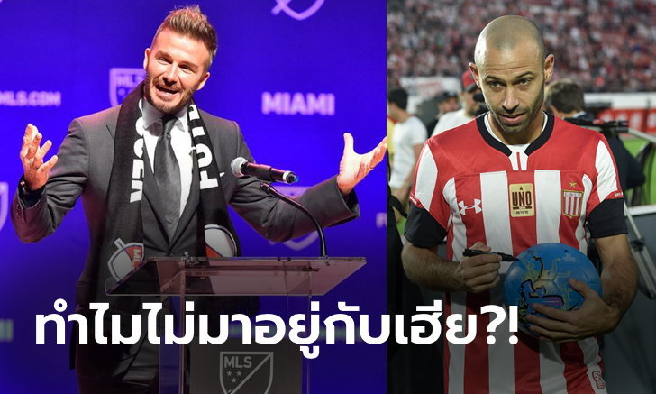

ค่าเหนื่อยล่อใจ! สื่อเผย "โอบาเมย็อง" ตกลงขยายสัญญาค้าแข้ง อาร์เซน่อล
ปิแอร์-เอเมอริค โอบาเมย็อง กองหน้ากัปตันทีม "ปืนใหญ่" อาร์เซน่อล ทีมดังในศึกพรีเมียร์ลีก อังกฤษ เตรียมที่ต่อสัญญาค้าแข้งในถิ่น เอมิเรตส์ สเตเดี้ยม ออกไป จากการรายงานของ เดลี่ เมล์ สื่อดังแดนผู้ดี
โดยสื่อเจ้าดังได้เปิดเผย ศูนย์หน้าทีมชาติกาบองได้บรรลุข้อตกลงกับต้นสังกัดได้เป็นที่เรียบร้อย และจะได้รับค่าเหนื่อยใหม่ที่สูงถึง 250,000 ปอนด์ต่อสัปดาห์เลยทีเดียว พร้อมกันนี้จะจรดปากกาต่อสัญญาออกไปอีกอย่างน้อย 3 ปี
สำหรับสัญญาฉบับเดิมของ ดาวยิงวัย 33 ปี จะหมดลงในช่วงซัมเมอร์ปี 2021 และตกเป็นข่าวต่อเนื่องว่าเตรียมย้ายออกจากทีม หลังไม่ค่อยพอใจสถานการณ์ของสโมสรที่ไม่ค่อยมีการเสริมทัพ รวมถึงฟอร์มช่วงหลังย่ำแย่อย่างต่อเนื่อง
อย่างไรก็ตามจากการที่พวกเขาสามารถคว้าแชมป์ เอฟเอ คัพ ด้วยการเอาชนะ เชลซี ไปได้ 2-1 รวมถึงมีการคว้าตัว วิลเลี่ยน ปีกทีมชาติบราซิล เข้ามาร่วมทีม ทำให้ตัวของ โอบาเมย็อง พอใจนโยบายของทีมที่มีการมองเห็นอนาคตข้างหน้า
อนาคตยังไงดี! "ฮาเมส" เปรยอยากโยกค้าแข้งในพรีเมียร์ลีก อังกฤษ ซีซั่นหน้า
ฮาเมส โรดริเกวซ มิดฟิลด์ทีมชาติโคลอมเบีย ของ เรอัล มาดริด ทีมดังในลา ลีกา สเปน ออกมายอมเปิดเผยแล้วว่าอาจย้ายไปค้าแข้งใน พรีเมียร์ลีก อังกฤษ ก่อนฤดูกาลใหม่จะเปิดฉากขึ้น เพราะที่นั่นคือเวทีการแข่งขันระดับท็อปอย่างแท้จริง
"ผมเคยผ่านประสบการณ์ค้าแข้งอันสวยงามมาในหลาย ๆ ลีกแล้ว แต่ยังไม่เคยลุย กัลโช เซเรีย อา กับ พรีเมียร์ลีก อังกฤษ เลยแม้แต่ครั้งเดียว" ว่าที่ตำนานทีมชาติโคลอมเบีย กล่าวกับ Daniel Habif
"อย่างไรก็ตาม ยังไม่มีใครสามารถบอกอะไรในเรื่องอนาคตได้ เพราะต้องตัดสินใจจากองค์ประกอบหลายอย่างเช่น ผมอยากไปค้าแข้งที่ไหน ? เรอัล มาดริด ยอมปล่อยหรือไม่ ? และทีมไหนบ้างที่จะยื่นข้อเสนอเข้ามา ?"
"ยอมรับตรง ๆ แหละว่าผมเองก็อยากรู้เหมือนกันว่าสุดท้ายจะได้ย้ายไปค้าแข้งที่ไหน บางทีอาจต้องรอนานหลายสัปดาห์ เพราะยังไม่ตัดสินใจอะไรทั้งนั้น แต่อังกฤษก็ยอดเยี่ยมมากนะ เพราะที่นั่นคือลีกระดับท็อปของจริง"
ภูผาหิน! "ปิแรส" เผยชื่อ "2 กองหลังคู่แข่ง" ที่ดวลยากสุดในชีวิต
โรแบร์ ปิแรส ตำนานปีกอาร์เซน่อล ยกย่อง จอห์น เทอร์รี และ ริโอ เฟอร์ดินานด์ อดีตเซนเตอร์แบ็กของเชลซี และ แมนเชสเตอร์ ยูไนเต็ด ว่าเป็นคู่แข่งที่ดวลด้วยยากสุดสมัยที่ยังโลดแล่นในสนาม
"เทอร์รีและเฟอร์ดินานด์เป็นคู่ต่อสู้ที่ยากมาก พวกเขาแข็งแกร่งสุดๆเลย"
"การย้ายจากฝรั่งเศสเพื่อมาเล่นในพรีเมียร์ลีกเป็นการเริ่มต้นที่ยากลำบากจริงๆ อาร์แซน เวนเกอร์บอกกับผมว่า 'มันไม่ใช่ฟุตบอลที่เหมือนกัน มันคือเรื่องของกายภาพ นายต้องเรียนรู้' ผมจำได้ดีเลย"
"เกมแรกของผมคือไปเยือนซันเดอร์แลนด์ ผมเป็นตัวสำรองและหลังผ่านไป 20-25 นาที ผมคิดในใจว่า 'โอ้ นี่ไม่ใช่เกมฟุตบอลของฉัน' การเล่นในพรีเมียร์ลีกไม่ง่ายเลย" อดีตแข้งวัย 46 ปีกล่าว
ไม่ต้องรอนาน! อันเดอร์เลชต์ ตั้ง "ก็อมปานี" คุมทัพเต็มตัว 4 ปี
หลังจาก แว็งซ็องต์ ก็อมปานี เซนเตอร์แบ็กจอมเก๋าวัย 34 ปี อำลา "เรือใบสีฟ้า" แมนเชสเตอร์ ซิตี้ เมื่อปี 2019 มาอยู่กับ อันเดอร์เลชต์ ทีมชั้นนำในลีกสูงสุดของเบลเยียม ซึ่งเป็นอดีตต้นสังกัดเก่าอีกครั้ง
ล่าสุด ก็อมปานีได้รับการแต่งตั้งให้เป็นกุนซือคนใหม่ของอันเดอร์เลชต์อย่างเป็นทางการ โดยจะเข้ามาคุมทีมสานงานต่อจาก แฟรงกี้ แฟร์เคาเตอเรน ซึ่งมีการเซ็นสัญญากันนานถึง 4 ปีเลยทีเดียว
สำหรับการรับตำแหน่งครั้งนี้เกิดขึ้นทันที ภายหลังอดีตแนวรับเจ้าของแชมป์พรีเมียร์ลีก อังกฤษ 4 สมัย, เอฟเอ คัพ 2 สมัย และ ลีกคัพ อีก 4 สมัย ในสีเสื้อเรือใบสีฟ้า ตัดสินใจประกาศแขวนสตั๊ดยุติอาชีพการค้าแข้งเป็นที่เรียบร้อย
ยังไม่โดนใจ! "มาสเชราโน" เผยเคยปฏิเสธย้ายซบทีมของ "เบ็คแฮม"
ฮาเวียร์ มาสเชราโน อดีตกลางรับทีมลิเวอร์พูล ยอดทีมแห่งศึกพรีเมียร์ลีก เปิดเผยว่าตนเกือบเซ็นสัญญากับอินเตอร์ ไมอามี ของ เดวิด เบ็คแฮม ก่อนที่จะปฏิเสธในวินาทีสุดท้ายเพื่อย้ายกลับไปค้าแข้งให้ เอสตูดิอานเตส ในลีกอาร์เจนตินาแทน
"ต้องยอมรับว่าช่วงที่ผ่านมาผมได้รับข้อเสนอจากหลายสโมสรทั่วโลก และหนึ่งในนั้นเป็นดีลจากเมเจอร์ลีก สหรัฐอเมริกา ซึ่งถือว่ามีความน่าสนใจมากเป็นพิเศษ" มาสเชราโนกล่าว
"คงไม่จำเป็นต้องปิดบังกันอีกแล้วล่ะเนอะ ทีมนั้นก็คือ อินเตอร์ ไมอามี ที่กำลังสร้างชื่อเสียงอยู่นั่นเอง แต่น่าเสียดาย เพราะสุดท้ายผมตัดสินใจเลือกย้ายกลับไปค้าแข้งกับสโมสรเก่าในลีกบ้านเกิดอย่างอาร์เจนตินา"
"คือการเจรจาระหว่างผมกับไมอามี เกือบจะบรรลุอย่างสมบูรณ์แล้วด้วยนะ แต่ด้วยปัจจัยหลายๆอย่าง ทำให้ผมคิดว่า เอสตูดิอานเตส เป็นทีมที่เหมาะกับตัวเองสุด"